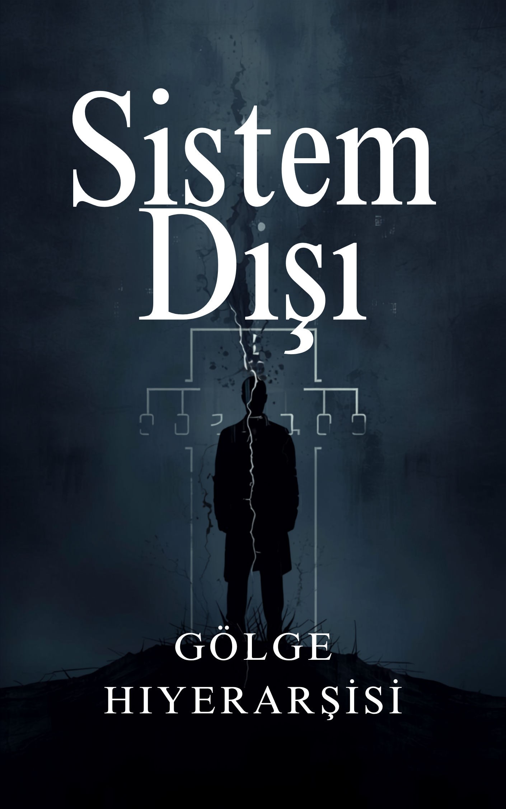

İş yerinde senden daha yeteneksizler terfi alırken...
ZİHİN KODLARI: GİZLİ PROTOKOL
12 Arketip İllüzyonu: Sana Anlatılmayan Eksik Parça
12 arketip bir yalan değil; kusursuz çalışan bir sistem. Ancak o büyük masalarda oturanların senden sakladığı bir sır var: Tabloyu eline verdiler ama hiyerarşiyi hackleyecek o anahtarı kendilerine sakladılar. Senin o tepeye ter akıtmadan, sadece zihnini kullanarak çıkmanı istemiyorlar. Herkesin bildiği bu hiyerarşide, kimsenin dillendirmeye cesaret edemediği o "gizli geçidi" masaya koyuyoruz.
SİSTEMİ HACKLE VE 15 ADIMI İNDİRYaraya Tuz Basma
Sorun sende değil. Sana öğretilen oyunda.
İlişkilerde kontrol sürekli karşı tarafın elindeyken...
Girdiğin ortamlarda varlığınla yokluğun birken...
ÇÖZÜM PROTOKOLÜ
Alfa Arketipe Giden 15 Adım
Kelimelere ihtiyaç duymadan; sadece duruşun ve bakışınla iş, ilişki ve sosyal hiyerarşide ipleri tamamen eline alma sanatı.
Saatlerce diksiyon çalışmana, aynanın karşısında ezberlenmiş cümleler kurmana ya da vücut geliştirme salonunda yıllarını harcamana gerek yok. Gereken şey, doğru anda doğru psikolojik düğmeye basmayı öğreten 15 adımı uygulamak.

Bağlılık Filtresi
Bu Neden Bedava Değil?
Açık konuşalım. Bu 15 adımlık sırrı buraya bedava da koyabilirdim. Ama insan psikolojisinin acı bir gerçeği var: Bedava elde edilen hiçbir bilgi uygulanmaz. Bu 149.99 TL, kitabın bedeli değil; senin o alt tabakadan çıkmayı gerçekten ne kadar istediğinin, bu yola baş koyup koymadığının filtresidir. Seçim senin.
FİLTREYİ GEÇ VE 15 ADIMI HEMEN İNDİR (149.99 TL)